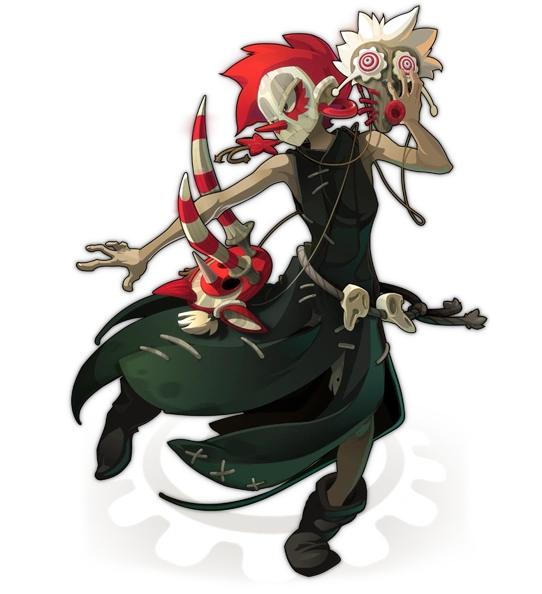
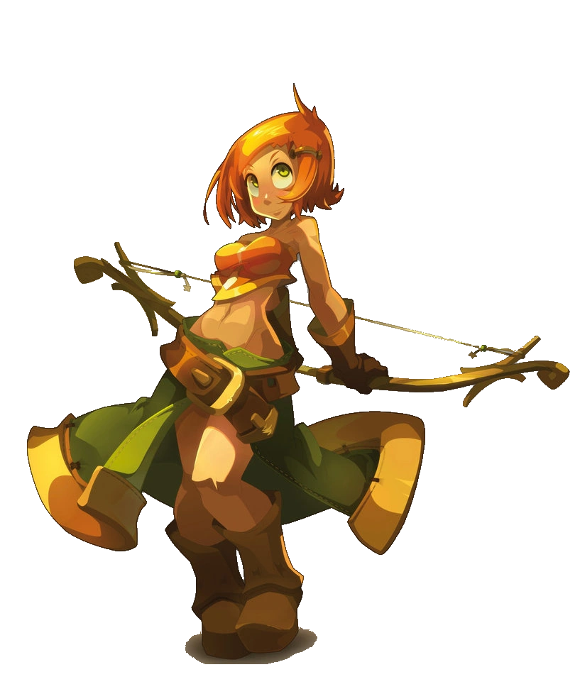
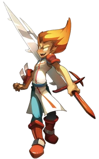
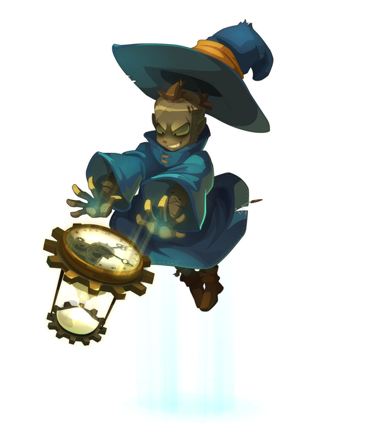
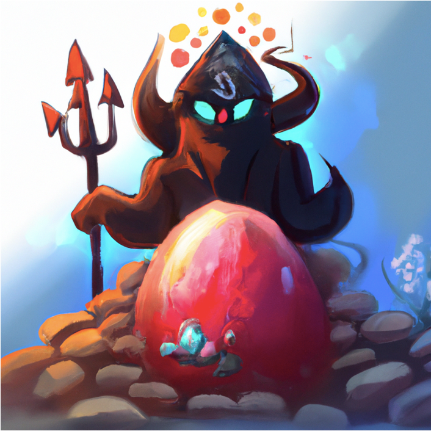
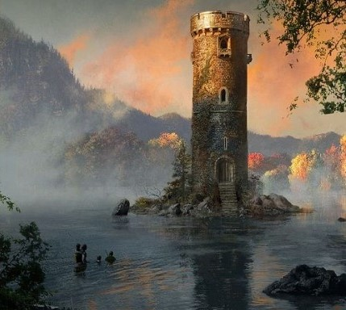
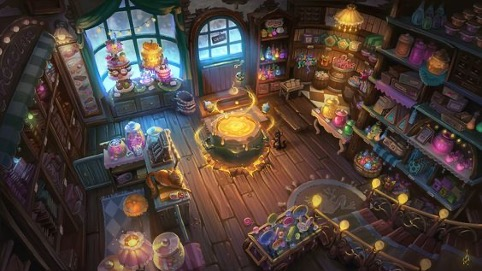
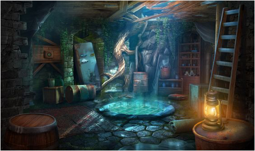

Qui ne s'est jamais laissé tenté par une chasse au trésor ?
Choisissez votre classe parmis les 4 suivantes et préparez vous pour l'aventure !

Le masque de Zobal

L'étendue de Cra

Le coeur d'Iop

Le sablier de Xelor
Synopsis :
Votre quête vous mène vers un mystérieux trésor, le Vulbis, caché depuis des siècles dans un légendaire donjon impénétrable. Celui-ci est gardé par Kralamour le géant.

Vous démarrez au pied du donjon avec pour objectif d'atteindre la salle des trésors.
Le donjon est plongé dans une obscurité profonde, et votre équipe doit affronter des pièges diaboliques et résoudre des énigmes complexes pour progresser à travers ses salles labyrinthiques.
Chaque salle représente un défi unique, mettant à l'épreuve votre coordination, votre mécanique et votre intelligence.
Au fur et à mesure de votre progression, vous découvrez l'histoire fascinante du donjon, autrefois la demeure d'un sorcier puissant, et les sombres secrets qu'il renferme.
Cependant, une présence maléfique grandit dans les profondeurs du donjon, et le temps presse. Vous devez sécuriser le Vulbis avant d'être engloutis par les ténèbres qui menacent de tout dévorer.
Votre équipe devra faire preuve de perspicacité, de courage et de coopération pour résoudre les énigmes finales, percer les mystères du donjon, et sécuriser le trésor tant convoité.
Relevez ce défi épique et explorez l'univers envoûtant de Dofus, où l'aventure et les énigmes vous attendent à chaque tournant.
Êtes-vous prêts à vous plonger dans l'inconnu et à révéler les trésors cachés du donjon ?

Salle n°1 :
Vous entrez plein d'espoir dans ce donjon lugubre et terrifiant. Selon les rumeurs, un trésor s'y cacherait. À vous de le retrouvrer ! Une fois dans l'entrée vous remarquez un escalier brisé en mille morceaux menant à l'étage supérieur mais vous distinguez également une trappe assez bien conservée par rapport au reste de la salle qui est presque entièrement détruit. Vous cherchez donc logiquement à ouvrir cette trappe mais en vain, le cadenas est verrouillé. Deux solutions s'offrent à vous, vous pouvez décider de le détruire ou de chercher une clé. Cependant vous remarquez quelques trâces de coups d'épée et d'impacts de marteau ce qui vous laisse penser que d'autres aventuriers ont déjà essayé cette approche hélas sans succés. Il ne vous reste plus que la deuxième solution qui est de chercher une clé, mais dans ces décombres cela risque d'être une tâche ardue qui nécessitera beaucoup de réflexion. Aurez-vous la patience de trouver une clé dans un tas de détritus ?

Salle n°2 :
Une fois la trappe ouverte, une odeur putride émane du sous-sol ne laissant rien présager de bon. Vous descendez une échelle qui pourrait se briser sous vos pieds à tous moments et vous arrivez dans un long couloir qui parrait vide. En y regardant de plus près vous vous rendez compte que la pièce est jonchée de pièges en tout genre : lames tranchantes, trou très profond et piques acérées. Tous ces pièges pourraient vous ralentir voir même arrêter votre aventure ici, mais ce serait trop facile non ? Votre objectif sera de traverser la pièce tout en recupérant sur les défunts aventuriers ayant échoués des indices sur
le potentiel trésor. Chaque piège de cette pièce a son propre fonctionnement ce qui rend la tâche plutôt difficile. En trouvant des indices vous apprenez que sous ce couloir se cache une magnifique taverne propre et bien entretenue. Vous découvrez également qu'une bête féroce vit ici et qu'elle pourrait être partout étant donnée son aptitude : elle peut se métamorphoser en n'importe quoi ! Maintenant que vous avez ces informations et que vous avez déjoué tous les pièges, vous arrivez devant un escalier en colimaçon très chaleureux menant à cette fameuse taverne.

Salle n°3 :
Une fois dans la Taverne un élément vous saute aux yeux : un coffre énorme se situe au milieu de la pièce. Serait-ce un piège ? Vous en déduisez que le Monstre a dû se transformer en coffre pour vous appater. En effet, une fois le premier pas fait dans la pièce le monstre se réveille. Vous vous rendez rapidement compte qu'il est dépourvu de vision et d'odorat mais qu'il peut très facilement se repérer avec l'ouïe. Le seul moyen de s'en sortir et de récupérer le précieux et tant convoité trésor serait d'assomer le Monstre afin de dérober son butin. Son point faible n'est pas si facile à exploiter, vous devrez vous emparer d'un marteau
magique capable de temporairement étourdir le Monstre, mais ce ne sera pas une mince affaire puisque le marteau est situé dans le dos du Monstre. Vous devrez donc, sans faire le moindre bruit, vous coordonner avec votre équipe à l'aide de gestes et autres moyens de communication pour vous emparer du marteau et pouvoir repartir les bras pleins de richesses en tout genre. Ça fait rêver n'est-ce pas ? Alors à vous de vous lancer dans cette merveilleuse aventure remplie de dénouement !